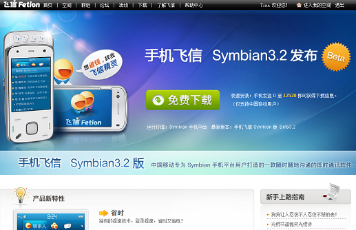
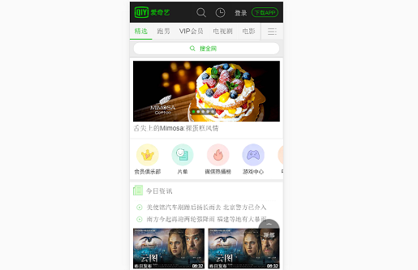
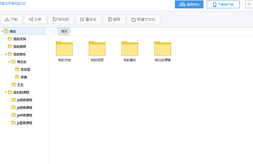

模拟飞信主页 兼容至IE6
主要利用：HTML5,Css实现静态页面，兼容至IE6
网易云音乐主页
主要利用：HTML5,Css实现静态页面
模拟新浪开放平台整站-静态页面
主要利用：HTML5,Css 实现静态页面以及鼠标移入效果

模拟爱奇艺app
主要使用：html5,css,rem单位，实现爱奇艺app静态页面

模拟腾讯微云-基于数据增删改
主要使用：原生Js,实现腾讯微云文件夹的增删改以及拖拽功能